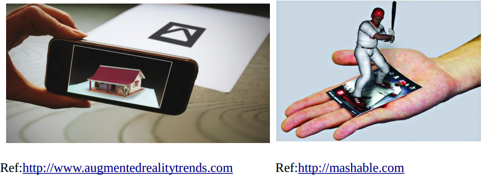
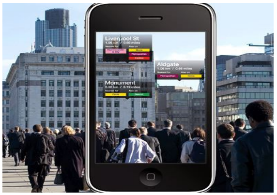
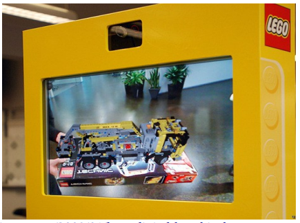

In the age of information technology, people are trying to find the way of getting information in an easy way and just in the time when require. In order to fulfil this requirement, they try to make development in many areas include communication, computing, electronic and many others.
As the development of technologies in many area, they also tried to make a system that can give the solution to their requirement. This was lead to development of Augmented Reality.
People have defined Augmented Reality in many different ways. I would like to explain the concept of it when defining Augmented Reality or AR. AR is a system that provide additional information in difference form(include text, images, audio, video and 3D models) about the objects (these include things, animals and people and can be specific or more than one objects) that we see in real time to magnify the five senses with the aid of varieties of technologies and designs these depend on development of technologies, application environment, usability, mobility, technologies literacy level of user and others.
It is also defined as a system need to have three characteristics in order to be true AR in the book “Augmented Reality An Emerging Technologies Guide to AR” written by Gregory Kipper and Joseph Ramoplla.
They are
Furthermore, Gene Becker who are founder and MD of lighting laboratories said that AR is a technology, a vision of future computing, a field of research, an emerging commercial industry and a new medium for creative expression.
Literally, we have familiar with AR in our daily life unconsciously. AR has been used in TV especially in sport programme for a long time. For instance, the goal score and time have been played is shown on screen while broadcasting live football match. Additionally, the flag ,that represent the country of an athlete, is shown in a block that is separated with a ling in a swimming pool in order to known easily which athlete is going swim in which block. These information are very helpful to the audience who are not closely able to involve in an event in person by adding state of real world into virtual world.
Sometimes, people think the thing that they are using or seeing or dealing with provide AR. Actually, they are not. Especially, that can happen in movie that make with 3D effect. In a 3D filming stage, the actor wear special black suit and acting in the green background setting. After that, the film maker get the aid of computer and other technology to transform into breathtaking scene. They way of using 3D filming seem the same as one of the way of creating AR(based on marker which is going to explain in following section). However, it is not true. If we can answer “Yes” to the question “Is it happening in real time”, we are using AR.
Generally, we can separate AR into three types. They are projectionbased, markerbased and markerless AR. We can still divide sub type on one of them.
This type of AR mainly rely on projector that is used to beam the image into surface and it is first type of AR technologies. The quality of image will be depend on the type or shape surface where the picture or information is going to show.
This type of AR mainly rely on object recognition technologies and algorithms in order to accomplish the tasks. It use a camera of a device (that can provide AR functionality) to read the marker (can be text, image, picture or any mark which means something to reading device) and show the information(can also be text, image, picture and these can also be animated in 3D) on the screen of device. It can be seem in many different area. For instance, education, travelling, advertising and many others.
When creating marker, combination high contrast colour are used in order to easily recognise by a reading device. Generally, back and white combination is used. Sometimes, the marker are as simple as 2D barcode or pattern to colourful picture.
Sometimes, the marker is not meaningful to the people if they see it in naked eye or without using AR device. Take an example, the picture on the left side, the market is just a rectangle on a white background and it does not mean to people until it is not seeing through a smart mobile that run AR application.
As the picture on the right side, people known meaning of market in their naked eye. When they see by the aid of AR device, they can get additional information about that object or entertainment.
Finally, translating application uses in smart phone include “Google Translate” are one of AR application that rely on marker.
This type of AR does not required to use any marker. It is more advanced or intelligent than markerbased AR. It use not only recognition ability of AR program but also other information getting from varieties sensors of AR device. The sensors will be GPS to provide current location of AR device in the world, solidstate compass to provide the direction that is pointed by AR device, IMU sensor to calculate how many degree is changed from previous state (let imagine, the sensor value will be change when user try to point to the top of 50 story building).
Ref:http://infospace.ischool.syr.edu
Sometimes, the quality of accuracy is low due to limitless of current using technologies especially the GPS.
We can separate the technologies uses in AR as two. They are hardware and software technologies. The hardware technologies involve sensors, processing or calculating devices, image rendering and generating devices and others. The software technologies involve object recognition algorithms or libraries, content management and rendering engine and AR libraries that is mainly used to create AR applications or programs. I am going to demonstrate detail of these technologies in the following sub sections.
We can distinguish the hardware technologies into three part. They are input, processing and output.
Input Devicessensors to collect information about the state of surrounding environment and receive the instruction from user.Processing Devices
generating information that will be useful to user by make complex calculation based on collected sensor data and give it to output devices or components.Output Devices
the valuable information given by processing device are shown to the user in convenient way.
There are varieties of sensors and input devices used in AR system. Nowadays, majority of these input devices can be seem in a smart mobile devices. These sensor are used track the orientation and location of AR user in the real world.
They are mainly used in markerless AR. It is used to pin point the current location of someone who is holding AR device or something that is attached with AR device and the direction that is pointed to an object in the world. By knowing the current location of device, it can limit the source and amount of data need to use when generating valuable information to user. For instance, an application that can retrieve the list of menu from a restaurant by pointing a mobile to the name of it. When a user point to a KFC restruant in Australia, it will show the menu that might be different from the menu of KFC in Myanmar even though the logo that is pointed to are the same. Because, the application limit the required information to Australia among other countries around the world due to coordinate data from GPS when processing to give valuable information to user.
IMU is a single unit that combine three kind of sensors (accelerometer, gyroscope and magnetometer) to sense the movement and state of sensing device.
is used to provide orientation of the device base on three axis.
is used to sense the acceleration of the device that is attached to. Which is used in AR system that is attached to moving object (for instance vehicle).
is used to identify an object by scanning the data of an object. Radio wave is used to to send (sometime also receive) the data from scanned object to scanner device. The range of communication between these two device vary according to their frequency that is relied on. The range can be different from 10 cm to up to 200m. It is mainly used in indoor tracking device. There is no doubt that it is also used in AR. Firstly, AR device or application try to find scan the RFID data with their RFID scanner, if they found it receive the data and used in calculation process. When they required additional information, they try to find the information by using other sensor technologies.
is also play an important role in locationbase service application that is also true for AR applications. Due to it advanced technologies the range of tracking device can be far more than RFID. However, there is a drawback in consumption of battery, RFID devices need to communicate with main controller all the time in order to participate in the sensor network and do the tasks. In order word, it will consume the battery as long as it make a communication with controller device. Nonetheless, due to advanced technologies of wireless sensor nodes, the amount of battery consumption is closing to RFID. 802.16 is one of technologies used as wireless sensor network. For instance, Xbee is a wireless sensor module produced by “Digi International Inc”.
These are the kind of sensors used in AR devices. In the next section, I am going to describe the components use in solving AR algorithms and libraries.
Computer grade processing power is vital when making AR application or device. Nowadays, smart phone devices can solve the complex problem as computer does. In additional, people may try to develop more on it due to it mobility. However, it has limit in battery power that will drain in a small amount of time when an application try to take the full capacity of processor and graphic controller device. Therefore, it rely on computing power of server computer and pass the data to and from via varieties of communication network link.
CPU or processor play an important role in AR application. It take the data from sensors, make complex calculation and give the command to show the information in output devices. It must have enough to process these step in real time. In other word, the time between from the receiving stage to show it on the display must not be higher than a second. Even a second delay can not accept in some application which are used in medical and military. Today, CPU have more one core and other advanced technologies to solve some stage of the complex problem. If they can not handle it, they try to get calculating power from server where the AR device is connected to.
RAM or random access memory is used to store data these are used by AR application while it is running on the device. It is also important in AR application. Generally, an application that required complex calculation as AR application consume alot of memory location because of the large amount of data is used in calculating processes. The problem will be stop or freeze if there is not enough space in memory for further calculation. It is not acceptable for the applications that required to solve the problem in realtime.
The third most important computation components used in AR is GPU or Graphical Processing Unit. It not only used to solve graphical rendering tasks (showing 3D image on the display device and others) but also share the workload with CPU when the computing power of CPU is limited. In the next few year, the processing power of GPU on mobile device will be the same as the one used in medium range computer.
Networking technologies used in AR is last one in computation components. AR device will rely on other high performance computing device when they can not solve the complex on their own. It also have high bandwidth to transfer data in real time. The AR application or device can not be affective one when they can not receive the data from the server that they rely on. People predict that the future generation of mobile radio technology (5G) will vital for advanced technologies include IoT or Interent of Things, AR and others.
We can distinguish the type of technologies used to provide information to user in two type. They are nonmobility and mobility display.
This type of display can move from the location that is placed. Additionally, that kind of display is big and heavy weight. It is not suitable to use as wearable device. They are usually similar to TV set. There are many type of display that can put under nonmobility display type.
The first one is “Kiosks”. It is mainly used in sales area. When the customer bring an item and show it to the camera of “Kiosks”, it will the picture of item(may be in 3D) what will look like after setting up on the screen. It is also used in schools, universities, museums, libraries and others which are usually related to public or used in public area.
Ref:http://www.ubergizmo.com/2009/01/lego-digital-box-kiosk-uses-augmented-reality-in-retailstores/
The second type of nonmobility display is “Projectorbased AR”. The image beam on to the surface that could be flat or in any shape but also the projected object could be stay in a place or moving these required complex calculation to show the image correctly than show it on flat area and non mobilised surface. The problem can be solved by using “structured light” techniques.
This type of display is called HMD or Headmounted Display. It will change it direction as the movement of the head. It is also the type of wearable display and can be in any shape and type. The display as designed as the thing that we wear on our daily life. The two common design use in these day are hamlet and glasses.
There are two different way of showing the information to user via display. The first one that user can see the real world along with information through the display (most of them are transparent glasses). However, technologies try to prevent from the incident that information interfere the vision of user.
The second one is that the display is opaque. In other word, user can see the real world when they put on the display that is not switch on or operate correctly. That kind of display put the information in the live video that is take by the camera of the display.
There are other technologies and different form these are used to give information back to user. They are in audio, haptic and olfaction.
As I have describe in the previous section, there are varieties of hardware components and techniques these are used to full fill when creating a AR application or device in one part. However, it is not the end. There are another technologies required to become a complete AR application or device. It is the software technologies. It is used to control the hardware components. In other words, the hardware components are nothing if it is controlled properly or use the function of it incorrect way. Therefore, software technologies play an important to interact with hardware component and solve the complex problem. In this section, I want to describe components these used in software technologies as libraries or API.
There are many software libraries these are used to create AR application. They are different according to their tasks. They can be used to interact with sensors, make complex mathematical calculation, rendering high quality image (3D) and sound and show it on the hardware display components. Sometimes, these software components are not designed to working together. In other word, they do the task as it is designed to do. Therefore, the developer need to find the way to integrate these libraries.
Thanks to companies those create a Framework or API for creating AR application. They put every single libraries these are usually used in the development of AR application. It is more easy to use these libraries because they are created by a single company or organisation and designed to work properly together. For instance, ARPA SDK that is created by Arpa Solution and can be used to create AR application run on iOS, Android, WindowPC and GoogleGlass. There are many SDK out there.
| SDK Name | Company | Platform |
|---|---|---|
| ARPA | Arpa | iOS,Android, Window, GoogleGlass |
| ARLab | ARLab | iOS,Android |
| Droid AR | Android | |
| Wikitube | Wikitube GmbH | iOS,Android,GoogleGlass,Phone Gap, Titanium |
These are software technologies used in the development of AR application.
AR has been using in many different area effectively for many years. In this section, I am going to describe the way and usefulness of AR in many area.
AR has been using in sports since many years. However, we do not notice unconsciously. When we see sports on TV, they use color line when an athlete break the rule or something. For instance, in a football game that line is used to show when a player is in offside position.
Gaming is one of area where AR has been used effectively. It can be seen by the development of “Kinect” by Microsoft. Firstly, it is designed to use in Xbox gaming console to get interaction between player and game in AR way. Later, it can be used in many other area such as robotic and computer program after Microsoft release SDKs. There are lot of mobile games that support AR. One of them is “PokimonGo” that is created by Nintendo company and it will introduce to the public in next few month. They make improvement of their previous game by adding location base augmented reality feature.
There are many application is used AR to use in educational area. That kind of application are based on marker so they can be called markerbased AR. There is no doubt that the language translating software created by “Google” for mobile device is one of them.
To make effective and entertainment way of teaching, schools print AR marker in textbook to get interactive character appear when the student read the book through mobile that is running AR application. That kind of teaching is not only used in primary school but also used in higher education. For example, medical school use AR application while professor is giving anatomy lecture.
Commerce is one of the area that used AR effectively. They usually put marker in their product to provide additional information about the product to customer. Additionally, customer can see what the product is look like in the box by putting under the camera of AR “Kiosks” device.
Some people said, we do not need any tour guide if we have a good tourguide AR application. It is true and has been used effectively in that area. We can see the “Parthenon” as Greeks saw the temple in the last few centuries. These applications can also provide information about historical building and area in many different way include audio, video, image and others.
AR is used effectively in military than others. Soldiers can get useful battlefield data on the screen of their hamlet or glasses. That kind of hamlet that is used by pilot and is shown in movie a lot. For instance, ARC4, AR glasses and developed for US soldiers which shown value information to solders that include maps, pin point to the location where IED has been blast in a few days and many others.
These are many other area where AR application or devices are using effectively.
AR is large area of development and varieties are people are working or making profit in many different way according to profession in one or all of components or part of AR. I would like to distinguish into three difference type of companies or organisations. They are as follow platform, product and application development organisations or companies.
The platform companies or organisations are the one they develop the software components or SKDs used to develop AR application. At the same time, they also develop the application on their own.
The production companies or organisations are the one they develop not only the device but also the application (including Game) to work with their products. For instance, Microsoft, Nintendo and Sony are production companies. Microsoft both create “Kinect” and game that rely on it.
The last one the application development companies who are developing different kind AR application for difference application area.
These are three type of organisations who are dealing with AR technologies.
The are many production companies who are producing AR devices. In this section I am going to describe the Google Glass as an example of AR devices.
It was created by Google in the last three years and can be defined as AR device with advanced technologies and easy to use. However, it was discontinued in 2014 due to privacy and security concerned. They are trying to make a new one currently but we do not know what kind of technologies are added to solve these kind of concerned.
It is a glasses that put camera, CPU, audio, sensors, battery and bluetooth are in tiny little space due to their advanced research and development technologies. User can given the command only only by pressing the button but also voice command. That can be used for many features these available in mobile phone such as web browsing, taking photo, sent and receive message, making phone call and many others.
There are many other companies produces AR devices. These are Moverio BT-200 (product of Epson), ODG R6(product of Osterhout), inford(product of EYEMO) and others.
AR technologies was developed in the many decades. However, it become popular in few years due to the advanced technologies of component used in it and their usability features. Additionally, they become mobility, lighter and easy to learn.
We can see many development not only in hardware but also in software technologies used in AR. I believe that in the future, maker or inverter to going to make AR devices these can put in our our body with luck of risk. For instance, AR production companies are try to make AR enable contact lenses even though glasses base AR are not still accepted by many people. However, they always try to make the product that we can not imagine before it is shown to the public.
In this article, I have examined the technologies these are used in the development of AR applications or devices, the concept, the area of using that technology, the people who are working in this area and others.
RECENT COMMENTS